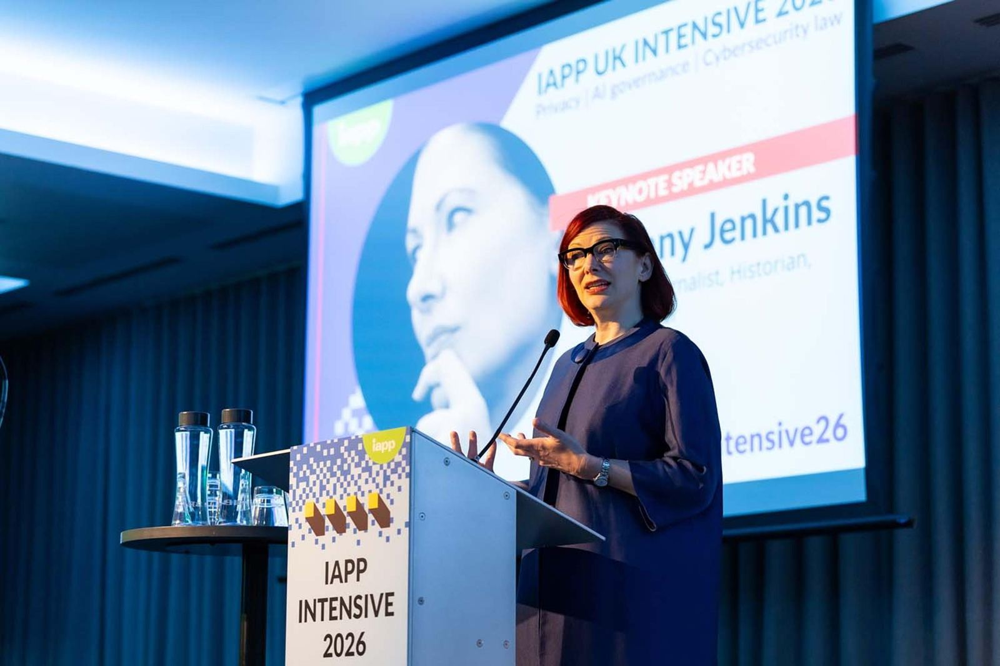

Conferences · AI
IAPP UK Intensive + AI Governance Global 2027
- Dates
- –
- Venue
- Hilton London Metropole
- Location
- London, United Kingdom
- Format
- In-person
- Category
- AI
- Industry
- AI
- Organiser
- IAPP
- Official website
- https://iapp.org/conference/iapp-uk-intensive
About
Official page: training 5-6 April, workshops 6 April, conference 7-8 April 2027; new venue for 2027 is the Hilton London Metropole.
Topics: AI governance, privacy, regulation.
No organiser attendance figure found on the official pages checked. Ranked by estimate (estimated size band under 5,000; this band is a research estimate, not an organiser figure).
Sources
- Official — https://iapp.org/conference/iapp-uk-intensive
Hotels
- Ember Locke, Kensington — 4★ · 202-220 Cromwell Road, Earl's Court, London, United Kingdom · 3.2 km from the venue · Price on request
- JW Marriott Grosvenor House London — 5★ · 90 Park Lane, Mayfair, London W1K 7TN, United Kingdom · 1.5 km from the venue · Price on request · Venue page
- Hilton London Metropole — 4★ · 225 Edgware Road, London W2 1JU, United Kingdom · At the venue · Price on request · Venue page
- The Chancery Rosewood — 5★ · 24 Grosvenor Square, Mayfair, London, United Kingdom · 1.5 km from the venue · Price on request
- The Landmark London — 5★ · Harewood Avenue, Marylebone, London NW1 6JQ, United Kingdom · 0.6 km from the venue · Price on request · Venue page
Venue
- Hilton London Metropole — Hotel conference venue · 225 Edgware Road, London W2 1JU · 1,350 capacity